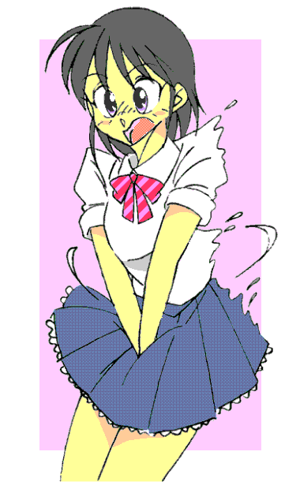

２０１３年 初秋 
今年の夏は、『酷暑』と言ってよいくらいの厳しい暑さだった。
その暑さもようやく少し和らいだのは、９月も半ばに入ったころだった。
この週末は３連休。
僕はこの鉄道路線のターミナルにある大型書店に出かけるために、今、駅のホームに立っている。
やがてプラットホームに案内放送が流れ、電車が滑り込んできた。
ドアが開き乗客が乗り降りする。
僕もその流れに乗って電車に乗ると、ロングシートの一角に腰を下ろした。
電車が動き出し、滑るように加速をしていく。
車内には自動放送で次の停車駅の案内が流れている。
乗客たちはスマホをチェックしたり新聞を広げて読んだりしている。
僕の横には２０歳くらいに見える女性が座り、トートバッグから文庫本を取り出すと広げて読み始めた。
僕も膝の上に載せていたリュックから、駅の売店で買った漫画雑誌を取り出して読み始めた。
表紙をめくると、魅力的な女性アイドルのグラビアが現れた。
「かわいいな・・・」僕は思わずため息をついた。
視線を感じて横を向くと、若い女性が僕を見てクスクス笑っている。
「妙なところを見られちゃったな・・・」
僕は慌ててページをめくってマンガを読み始めた。
その間にも電車は、いくつかの駅に停車し、乗客たちが乗り降りをしてゆく。
ちらりと横を見ると、一瞬女性と視線が合った。
彼女は真っ直ぐ僕の目を見ている。
僕は少し恥ずかしくなり、車内に貼られている吊広告に視線を移した。
雑誌や新築マンション。デパートなどいろいろな広告があるのだが、その中の一つで僕の視線は止まった。
ついさっき見たグラビアの女性アイドルに勝るとも劣らない美しい女の子が二人、車内の乗客たち・・・・・・そして、僕に微笑んでいる。
『聖トランス女子大学』、確か政財界に優秀な卒業生（もちろん女子）を送り出しているだけではなく、女優やタレント、女子アナにもこの大学の卒業生は多いだけではなく、例外なく大活躍している。
『可愛らしいな・・・』
そう思いながら見ていると、
「一緒に行ってみる？」
「エッ？！」
僕が驚いて横を見ると、彼女が微笑みを浮かべながら僕を見つめていた。
彼女は僕の表情を見てクスッと笑うと、
「わたし、あの大学の学生なの・・・」
彼女は吊広告を指さしながら、
「オープンキャンパスでしょう？ 一緒に行ってみない？」
「いや・・・それは・・・？」
僕は男だし・・・困惑しながら答えると、彼女はその柔らかい手で僕の手首を掴んだ。
「関係ないわよ！」
そういうと同時に、その細い体からは信じられないほど強い力で彼女は僕の腕を引っ張ると、電車を降りた。
「とんでもないことになったな・・・」
辺りでは、友人同士、あるいは両親に連れられた女子高校生たちが歩いて行く。
なぜ、僕はこんな場所にいるんだろう・・・僕はため息をつきながら、その立派な門の前で立ち尽くしていた。
そう、彼女に引っ張られて電車を降りた僕は、彼女に連れられて『聖トランス女子大学』の前までやってきたのだ。
「どうしたの？」
早く行きましょう・・・彼女は僕の顔を覗き込みながら言ったのだが、
「いや・・・やっぱ駄目だよ・・・」
男の僕が行く場所じゃない・・・僕は首を振った。
彼女は小さくため息をついた。
そして僕の目をしっかり見ると、
「男の子が女子大に行ってはダメって・・・誰が決めたの？」
「ハッ？（^＾；」
彼女の質問が、自分の想定を超えていたため、僕は咄嗟に答えることができなかった。
「だから、なぜ男の子は入ってはいけないの？」
「女子大だからね！」
「別に良いじゃない！」
大丈夫よ！ ・・・そう言うと、彼女は僕の手を引っ張り校門の中・・・大学の構内に引っ張り込んだ。
「やめろよ！」
僕が叫んだ瞬間、僕は自分の体に異変を感じた。
見えない何かに、体全体を押さえつけられるような感覚だ。
「な・・・なっ・・・？！」
全身で感じる不思議な感覚に、声を出すこともできない。
股間に痺れるような感覚を感じた。
“男としての象徴”が小さくなっている？！
まるでそれに合わせるように、足のつま先は内側を向き、ひざ同士が触れ合うようになっていく。
お尻と胸が、体の内側から何かを注入されたかのように、丸く・・・そして形良く膨らんでいく。
逆にお腹周りがまるで女の子の括れたウエストのように細くなっていく。
女の子？ ・・・そう、僕の体は・・・まさか？！
その間に、着ているはずのシャツとジーンズの感覚が変わっていく。
体を見下ろすと僕の視界に入るのは、えんじ色のストライプの入ったリボンタイと、形よく膨らんだ胸を覆う白いブラウス。
そして濃紺のプリーツスカートとそこから伸びる白く美しい足には紺色のハイソックスとローファーの革靴が履かされていた。
僕は“大事なこと”を思い出し、自分のものとは思えない白い手でスカートの前・・・・・・股間を抑えた。
自分のものとは思えない可愛らしい声で呟いた。
「こらこら“女の子”がはしたないわよ」
彼女が僕を見て笑っている。
「僕は・・・？！」
「あれを見ても“男だ”と言えるのかしら？」
彼女が指差した先にあるのは、校舎の窓・・・そこに映るのは、彼女と・・・・・・僕が通っていた高校の“女子の制服を着た女の子”・・・そう、そしてそれは僕自身の今の姿だ。
「これが・・・僕・・・？」
「もう“僕”は、やめた方がいいわね・・・」
そんなに可愛いのに台無しよ・・・彼女は笑うと、
「これなら、女子大に入っても大丈夫でしょう？」
さあ、行きましょう・・・僕は彼女に手を引っ張られて大学の校舎に入っていった。
そう・・・
女子大学のオープンキャンパスにやってきた、
“女子高校生”としての時間を過ごすために・・・。
時間はたちまち過ぎてゆき、校舎を夕日が照らしている。
「どう、楽しかった？」
「うん・・・」
僕は頬を赤らめながら頷いた。
模擬授業やクラブ活動、そして学生食堂で女の子の好物・・・スイーツまで食べていると、いつしか自分が男だということすら忘れそうになっていた。
「安心して・・・校門から外に出れば、あなたは元に・・・男の子に戻るから」
「エッ？」
僕は自分の体を見下ろし、一瞬戸惑いの表情を浮かべた。
「・・・でも、あなたは男の子でしょう・・・？」
「う・・・うん・・・」
彼女は、明るく笑った。
「さあ、じゃあ最後にアンケートを書いてもらおうかしら・・・」
彼女は学校のパンフレットなどが入った紙袋からアンケート用紙を取り出した。
僕は質問内容に回答をしていた。
彼女は、この大学のパンフレットを見ながら、
「この大学に入れば、あなたは入学をした時から“女の子としての人生”を過ごすことになるわね・・・・・・」
入学案内を読んだでしょう？ 受験資格は高校を卒業したものか卒業予定者・・・『女子に限る』とは書いていないのよね・・・・・・。
彼女の言葉が、甘く・・・僕の心に沁みこんでいく・・・・・・。
アンケートの最後の質問、
『あなたは本学を受験したいですか』という質問に、わたしは迷わず『はい』と書かれた欄に丸を付けていた。
オープンキャンパス
（おわり）
□ 感想はこちらに □